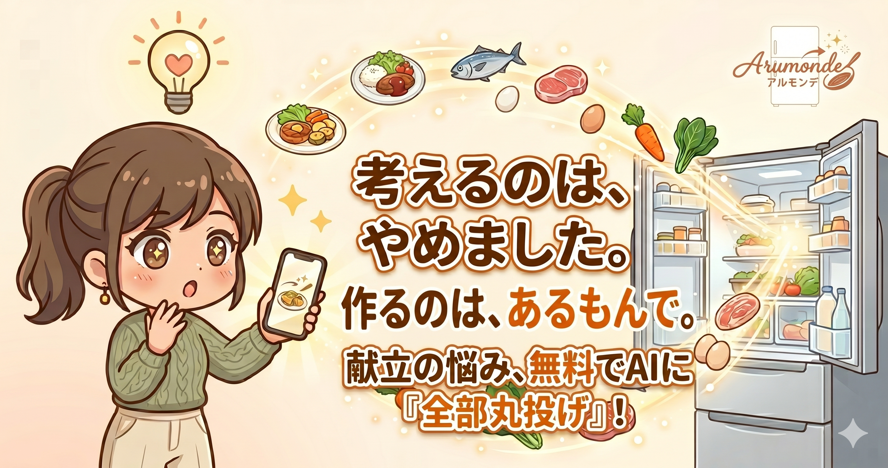

Works
Profile
異業種での多様な経験から学んだのは、常に「使う人の気持ち」に寄り添うことの大切さです。 日々の生活の中にある「これ、もっとこうなったらいいな」という気づきを、 技術とデザインで実現できるよう日々研鑽を積んでいます。
Logic
倉庫事務 (7年)
正確さと効率を追求する姿勢の土台。
Support
舞台裏方・マネージャー
現場を支える調整力と、ユーザーを思う黒子精神。
Solution
営業職 (2年)
話しやすさ」を大切に、相手の小さなお困りごとを丁寧に汲み取る経験。
Challenge
フロントエンドエンジニア養成科 (受講中)
現在、創造社リカレントスクール三宮校にて、フロントエンド技術を習得中。
- HTML5 / CSS3 / JavaScript
- UI/UX Design
- VS Code / Git / GitHub / Figma